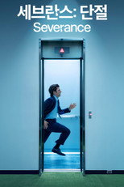
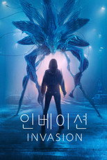

272주 기록 · 94개국
순서는 TMDB 인기도입니다 — 넷플릭스 외 서비스는 공식 순위를 공개하지 않습니다. 제공처는 JustWatch 자료(2026-09-22 확인)이며 가입 전 서비스에서 최종 확인하세요. 티빙 요금·할인 →

'세브란스: 단절' - Severance Severance시리즈 · 2022 · 드라마 · 미스터리 · 애플TV+에도제공처 ↗16'파운데이션' - Foundation Foundation시리즈 · 2021 · SF/판타지 · 드라마 · 애플TV+에도제공처 ↗17고독한 미식가시리즈 · 2012 · 드라마 · 웨이브, 왓챠에도제공처 ↗18위대한 세기 Muhteşem Yüzyıl시리즈 · 2011 · 드라마 · 액션 · 웨이브, 왓챠에도제공처 ↗19'플루리부스: 행복의 시대' - Pluribus Pluribus시리즈 · 2025 · 드라마 · SF/판타지 · 애플TV+에도제공처 ↗20여봉행시리즈 · 2024 · 드라마 · SF/판타지 · 왓챠에도제공처 ↗21환혼 Alchemy of Souls시리즈 · 2022 · 드라마 · SF/판타지 · 넷플릭스에도넷플릭스 한국 최고 1위22당조궤사록 : 당 왕조의 괴이한 사건 기록시리즈 · 2022 · 미스터리 · 범죄 · 웨이브, 왓챠에도제공처 ↗23치명유희시리즈 · 2024 · 드라마 · 미스터리 · 웨이브, 왓챠에도제공처 ↗24경여년시리즈 · 2019 · 드라마 · 코미디 · 웨이브, 왓챠에도제공처 ↗25체르노빌 Chernobyl시리즈 · 2019 · 드라마제공처 ↗26'맵다 매워! 지미의 상담소' - Shrinking Shrinking시리즈 · 2023 · 드라마 · 코미디 · 애플TV+에도제공처 ↗27'어둠의 나날' - See See시리즈 · 2019 · 드라마 · SF/판타지 · 애플TV+에도제공처 ↗28여신강림시리즈 · 2020 · 코미디 · 드라마 · 넷플릭스에도제공처 ↗29아가사 크리스티: 미스 마플 Agatha Christie's Marple시리즈 · 2004 · 드라마 · 범죄 · 웨이브에도제공처 ↗30셰틀랜드 Shetland시리즈 · 2013 · 범죄 · 드라마 · 웨이브, 왓챠에도제공처 ↗31'마지막 흔적' - Last Seen Last Seen시리즈 · 2026 · 범죄 · 드라마 · 애플TV+에도제공처 ↗32포핸즈 Four Hands, Two Sonatas시리즈 · 2026 · 드라마 · 넷플릭스에도넷플릭스 한국 최고 2위33'럭키' - Lucky Lucky시리즈 · 2026 · 드라마 · 범죄 · 애플TV+에도제공처 ↗34막돼먹은 영애씨시리즈 · 2007 · 코미디제공처 ↗3512 몽키즈 12 Monkeys시리즈 · 2015 · SF/판타지 · 드라마제공처 ↗36죄인 The Sinner시리즈 · 2017 · 범죄 · 드라마 · 넷플릭스에도제공처 ↗37도깨비 쓸쓸하고 찬란하神-도깨비시리즈 · 2016 · 드라마 · SF/판타지 · 넷플릭스에도제공처 ↗38'2050: 벼랑 끝 인류' - Extrapolations Extrapolations시리즈 · 2023 · 드라마 · SF/판타지 · 애플TV+에도제공처 ↗39
'인베이션' - Invasion Invasion시리즈 · 2021 · SF/판타지 · 드라마 · 애플TV+에도제공처 ↗40'프렌즈 & 네이버스' - Your Friends & Neighbors Your Friends & Neighbors시리즈 · 2025 · 드라마 · 범죄 · 애플TV+에도제공처 ↗41경이로운 소문시리즈 · 2020 · 드라마 · 미스터리 · 넷플릭스에도제공처 ↗42'미틱 퀘스트' - Mythic Quest Mythic Quest시리즈 · 2020 · 코미디 · 애플TV+에도제공처 ↗43루드비히 : 퍼즐로 푸는 진실 Ludwig시리즈 · 2024 · 미스터리 · 범죄 · 웨이브, 왓챠에도제공처 ↗44인데버 Endeavour시리즈 · 2013 · 범죄 · 드라마 · 웨이브, 왓챠에도제공처 ↗45'케이프 피어' - Cape Fear Cape Fear시리즈 · 2026 · 범죄 · 드라마 · 애플TV+에도제공처 ↗46오싱시리즈 · 1983 · 드라마 · 가족 · 웨이브에도제공처 ↗47'나쁜 원숭이' - Bad Monkey Bad Monkey시리즈 · 2024 · 코미디 · 범죄 · 애플TV+에도제공처 ↗48'배드 시스터즈' - Bad Sisters Bad Sisters시리즈 · 2022 · 드라마 · 범죄 · 애플TV+에도제공처 ↗49'돈벼락' - Loot Loot시리즈 · 2022 · 코미디 · 애플TV+에도제공처 ↗50슬기로운 의사생활 Hospital Playlist시리즈 · 2020 · 드라마 · 코미디 · 넷플릭스에도넷플릭스 한국 최고 1위51'하이재킹' - Hijack Hijack시리즈 · 2023 · 드라마 · 애플TV+에도제공처 ↗52레버리지: 리뎀션 Leverage: Redemption시리즈 · 2021 · 액션 · 모험 · 웨이브, 왓챠에도제공처 ↗53'더 스튜디오' - The Studio The Studio시리즈 · 2025 · 코미디 · 드라마 · 애플TV+에도제공처 ↗54'두 번째 스윙' - Stick Stick시리즈 · 2025 · 코미디 · 드라마 · 애플TV+에도제공처 ↗55'카풀 노래방: 시리즈' - Carpool Karaoke: The Series Carpool Karaoke: The Series시리즈 · 2017 · 코미디 · 애플TV+에도제공처 ↗56첫 번째 남자시리즈 · 2025 · 범죄 · 가족 · 웨이브에도제공처 ↗57몽땅 내 사랑시리즈 · 2010 · 코미디 · 웨이브에도제공처 ↗58장야시리즈 · 2018 · 액션 · 모험 · 웨이브, 왓챠, 넷플릭스에도제공처 ↗59'마스터스 오브 디 에어' - Masters of the Air Masters of the Air시리즈 · 2024 · 드라마 · 전쟁 · 애플TV+에도제공처 ↗60그레이스 Grace시리즈 · 2021 · 범죄 · 드라마 · 웨이브, 왓챠에도제공처 ↗